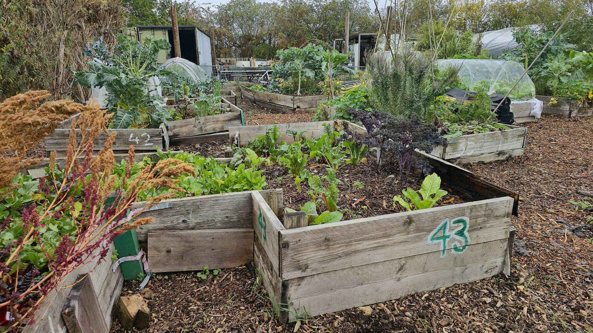

Best Materials for Lasagna Composting
What can you layer in a lasagna compost bed? Learn which greens and browns work best, how to build layers.
Greens Layer Materials
Each green layer should be about 3-4 inches thick, moistened before adding the next brown layer.
Kitchen Scraps
Fruit peels, vegetable trimmings, coffee grounds. Chop into small pieces for faster decomposition.
Garden Clippings
Fresh grass clippings, herb stems, flower cuttings. Avoid diseased plant material.
Manure (herbivore)
Horse, cow, or rabbit manure adds nitrogen and accelerates decomposition significantly.
Browns Layer Materials
- Dry leaves — the classic lasagna compost brown layer
- Straw or hay — adds structure and carbon
- Shredded cardboard (remove tape/staples)
- Sawdust from untreated wood
Soil Starter Layer
Start your lasagna bed with a 4-inch layer of garden soil or finished compost. This introduces the beneficial microbes that kickstart decomposition.
Materials to Avoid
- Pet waste (dog/cat) — contains pathogens
- Diseased plant material — spreads disease to healthy soil
- Treated wood or painted materials — releases toxins